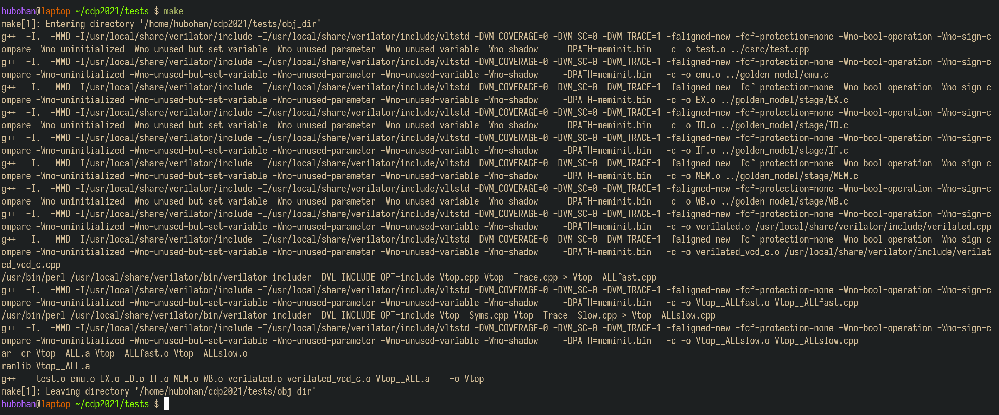
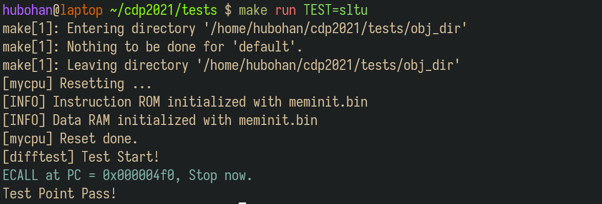
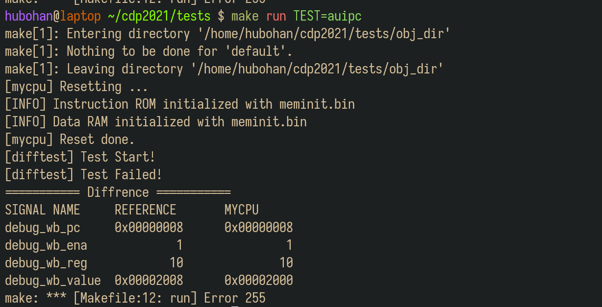
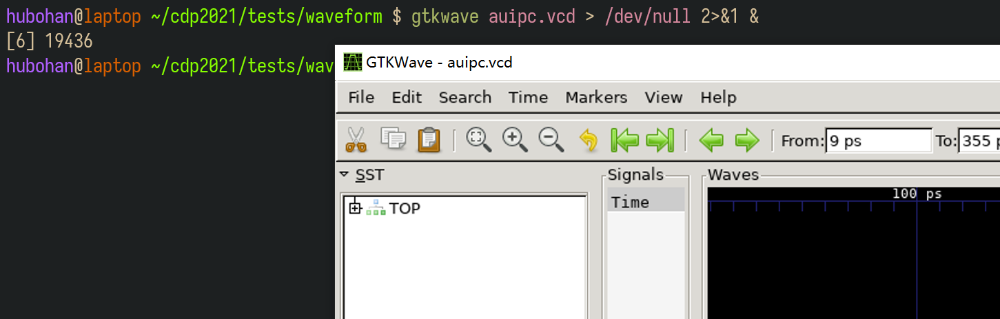
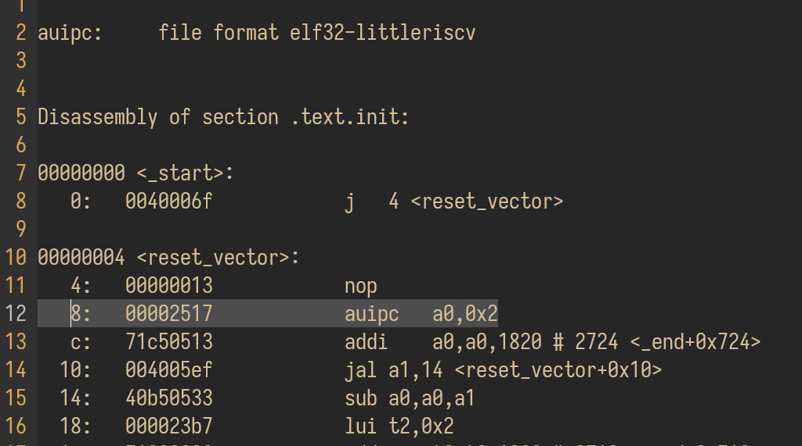
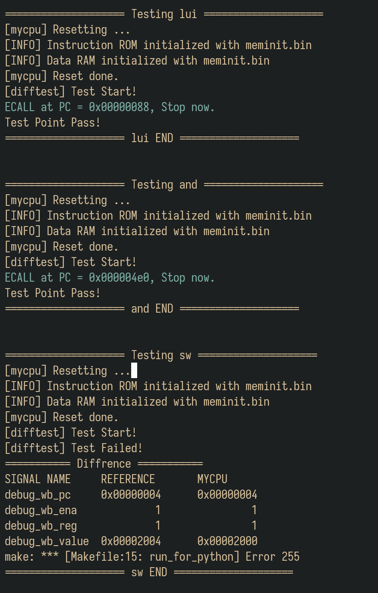
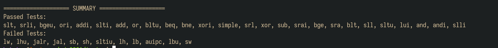
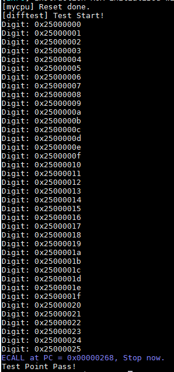
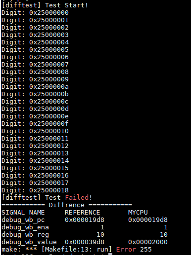

测试机制说明
0. 关于实验环境
Trace测试使用Linux系统部署测试环境，我们提供了三种实验环境供同学们选择：
（1）远程实验平台
远程实验平台已经将Trace部署在实验中心的服务器上，我们把所有依赖的配置都已经事先搭建完毕。无论你的电脑性能如何，无论你是在宿舍、实验室还是自习室，只要你还能连上校园网，你就能完成你的实验。具体使用方式详见远程实验环境使用指南。
Info
虽然我们已经做了一些方案保证远程环境的可靠性，但在某些特殊情况下，也不能确保不出故障，为安全起见，建议同学们将代码及时上传到git仓库或者下载到本地保存。
（2）本地虚拟机
我们提供了虚拟机镜像供同学们下载到你本地的电脑上运行。我们也帮你把所有依赖的配置都已经事先搭建完毕，你只需要下载、导入虚拟机即可使用。具体使用方式详见虚拟机使用指南。
（3）自行部署实验环境
同学们也可以尝试在自己的电脑上部署实验环境，体验一下自己动手的乐趣：）具体搭建方法详见实验环境部署指南。
1. 了解测试框架
请在终端下输入命令：
cd ~
git clone https://github.com/HITSZ-CDP/cdp-tests.git
cd cdp-tests
git checkout peri
拉取测试框架代码，并切换至peri分支。
.
├── bin（指令测试用例，用于初始化内存）
│ ├── add.bin
│ ├── .......
│ ├── xor.bin
│ └── xori.bin
├── asm（指令测试用例的反汇编文件，用于调试）
│ ├── add.dump
│ ├── .......
│ ├── xor.dump
│ └── xori.dump
├── csrc（测试驱动框架，包括比对逻辑）
│ ├── dut.h
│ └── test.cpp
├── golden_model（参考RISC-V CPU行为模型，使用C语言编写）
│ ├── emu.c
│ ├── include/...
│ └── stage/...
├── waveform【运行测试后生成】（运行测试生成的波形文件，用于调试）
│ ├── add.vcd
│ ├── ........
│ └── xori.vcd
├── Makefile
├── mycpu（你实现的CPU的Verilog代码，放在此目录下，仅放Verilog代码，不拷贝IP核）
│ ├── cpu.v
| ├── .....
│ └── top.v
├── vsrc（仿真需要用到的其他文件）
| └── ram.v（distributed memory的行为仿真模型）
├── run_all_tests.py（自动化测试脚本）
└── Makefile
我们测试的原理是差分测试，即比对标准模型和待测模型之间的区别。在实验中，标准模型就是golden_model下使用C语言实现的一个RISC-V CPU模型，而待测模块就是你所实现的CPU。驱动测试的代码逻辑位于csrc文件夹中，分别让标准模型和待测模型执行同一条指令，比对他们执行的结果，来确定你的CPU是否实现正确。你只需要关注mycpu目录，暂时不需要关注其他目录，你需要将自己实现的CPU的Verilog代码粘贴到这个目录下。
2. 添加自己的代码
mycpu目录中包含了你实现的CPU，以及顶层模块对外的连线，你需要将自己实现的CPU代码复制到该目录下，模块的层次结构如下图所示：
需要注意的是：
-
在之前的实验中，我们是使用IP核来实现的指令和数据存储器，而在此处，我们已经为你提供了相应的IP，你无需将IP核的xci文件拷贝至目录下，只需在
top中实例化并完成连线即可。 -
你需要保证在
mycpu目录下的模块的层次关系中，顶层模块名叫做top，且top模块的接口信号命名满足要求。
module top(
input clk,
input rst_n,
output debug_wb_have_inst, // WB阶段是否有指令 (对单周期CPU，此flag恒为1)
output [31:0] debug_wb_pc, // WB阶段的PC (若wb_have_inst=0，此项可为任意值)
output debug_wb_ena, // WB阶段的寄存器写使能 (若wb_have_inst=0，此项可为任意值)
output [4:0] debug_wb_reg, // WB阶段写入的寄存器号 (若wb_ena或wb_have_inst=0，此项可为任意值)
output [31:0] debug_wb_value // WB阶段写入寄存器的值 (若wb_ena或wb_have_inst=0，此项可为任意值)
);
mini_rv mini_rv_u (
.clk(clk),
.rst_n(rst_n),
//......
);
// 下面两个模块，只需要实例化并连线，不需要添加文件
inst_mem imem(
);
data_mem dmem(
);
endmodule
Warning
（1）对于Trace比对，需要将指令ROM和数据RAM的大小设置为 32bit*65536！
（2）指令ROM的模块名必须是 inst_mem，数据RAM的模块名必须是 data_mem！
（3）CPU复位后执行的首条指令的地址必须是 0x0000_0000！
以上设置错误会导致Trace比对失败！
3. 运行测试
推荐使用 MobaXterm运行测试 （远程实验平台的MobaXterm用法详见使用MobaXterm，虚拟机的MobaXterm用法详见使用MobaXTerm）
首先进入cdp-tests文件夹，输入命令：
cd cdp-tests
make
将会编译你的Verilog代码，生成可执行的仿真模型。

3.1 运行单个测试
如果你对你CPU没有充足的信心，你可以选择单个测试运行，所有的测试用例都位于bin文件夹下，输入命令
ls bin
可以看到测试点名称。
例如，我们想运行sltu指令的测试，我们输入：
make run TEST=sltu

打印出Test Point Pass之后，就代表这条指令测试通过了。
如果发生了错误，就会打印如下所示的信息：

左栏为参照的正确实现，右栏为你实现的CPU给出的信号，通过比对这两组信号，你可以很快地确定错误发生在哪一条指令执行过程中，然后通过反汇编和波形的形式进行调试。
3.2 打开波形
在执行完某个测试之后，所生成的波形会在waveform文件夹中，如果要查看auipc测试点的波形，进入waveform文件夹，输入命令
Warning
如果你要通过VSCode工具自带的终端查看波形，你需要在你自己的电脑上安装vcxsrv，此外还需要在VSCode安装remote X11插件，安装完成后就可以查看波形了。 如果你用MobaXterm就不需要那么麻烦，直接输入命令就可以查看波形：）
gtkwave auipc.vcd > /dev/null 2>&1 &
弹出波形窗口。（auipc替换成需要打开的文件名）

3.3 查看反汇编
反汇编文件在asm文件夹中，在上述例子中，我们看到是在PC=8处出现了错误，写回的值不对，而观察auipc.dump文件，可以找到出错点。

根据出错点，结合波形，我们可以进行高效的调试了。
3.4 批量运行测试
如果你对你的实现有足够的信心，可以采用以下两种方式来自动化测试。
（1）使用python脚本自动测试
python3 run_all_tests.py
Warning
执行这条命令之前，需要保证之前已经make过了。
在很长的滚屏之后，会出现一个测试报告，告诉你哪些测试通过，哪些测试不通过。所有测试点的波形文件都在waveform文件夹中，你可以打开对应的文件结合反汇编和在SUMMARY之前输出的报错信息进行调试。


（2）使用start测试程序自动测试
输入以下命令:
make run TEST=start
如果你的mycpu能够支持37条指令（24条必做和13条选做），则会显示“Test Point Pass!”。

如果测试显示“[difftest] Test Failed!”，说明没有通过37条指令测试。Digiti的数值则表示你的mycpu通过的功能点数，其高8位为0x25，表示共有37个测试点，低8位表示通过的测试点数。
